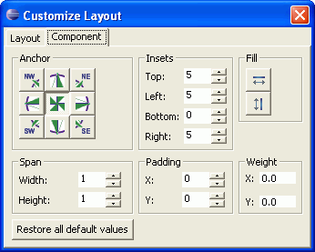

You can use the Customize Layout window to specify anchor position, insets, fill, span, padding, and weight for components within GridBagLayout.
In GridBagLayout, the visual editor uses default values for constraints, such as fill, anchor, weight x, and weight y, in order to display the component better. For example, when you drop a javax.swing.JTextField, the fill is set to HORIZONTAL (default value for JTextField is NONE), and the weight X value is set to 1 (default for JTextField value is 0).
When switching to a GridBagLayout from another layout manager, the visual editor for Java generates constraints for each component based on their existing bounds. An advantage of using GridBagConstraints instead of a null layout is that each component is sized according to its preferred size. So, if the size of the parent window changes or if the preferred sizes change at run time due to different language strings, the layout manager will resize and reposition all of the components and make the best use of the available space.
To customize the layout of components within GridBagLayout:
- Select the component that you want to customize within the GridBagLayout,
and click the Customize Layout
 toolbar button Tip: Select multiple components to set identical anchor, fill, and inset constraints on multiple components at the same time.The Customize Layout window shows the anchor position, insets, fill, span, padding, and weight values of the selected components on the GridBagLayout. If multiple components are selected, the anchor value and fill values only show a pressed button if all the components have the same value. The inset values shown are those set for the last component selected.
toolbar button Tip: Select multiple components to set identical anchor, fill, and inset constraints on multiple components at the same time.The Customize Layout window shows the anchor position, insets, fill, span, padding, and weight values of the selected components on the GridBagLayout. If multiple components are selected, the anchor value and fill values only show a pressed button if all the components have the same value. The inset values shown are those set for the last component selected.